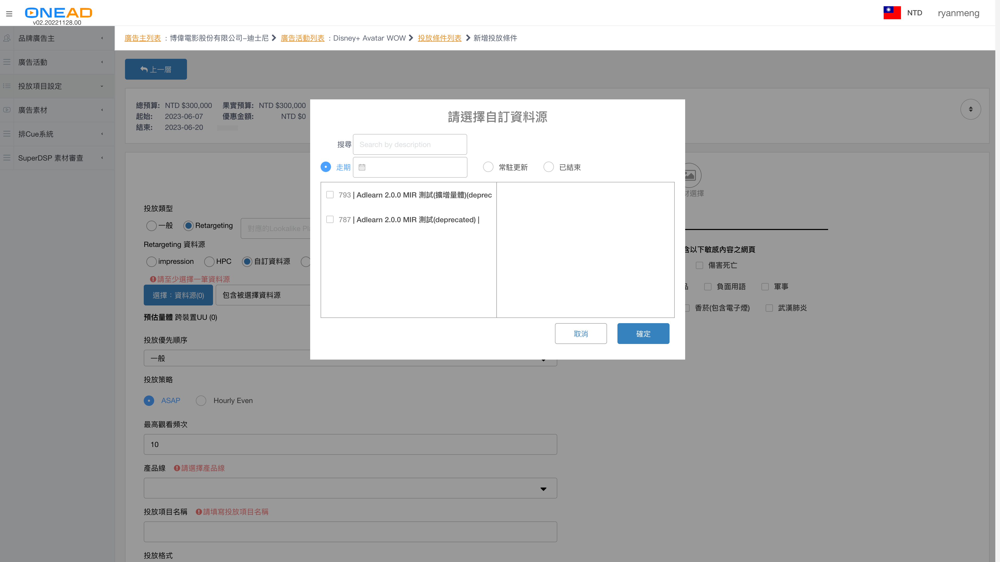
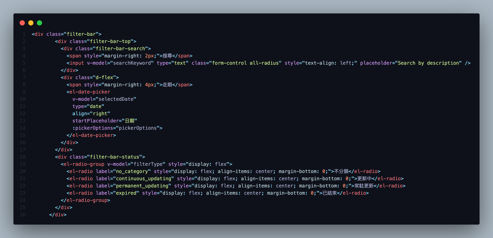
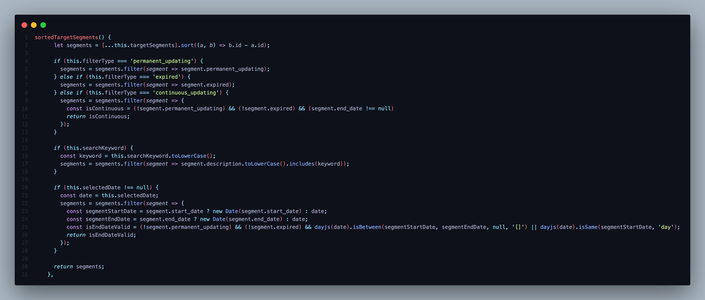
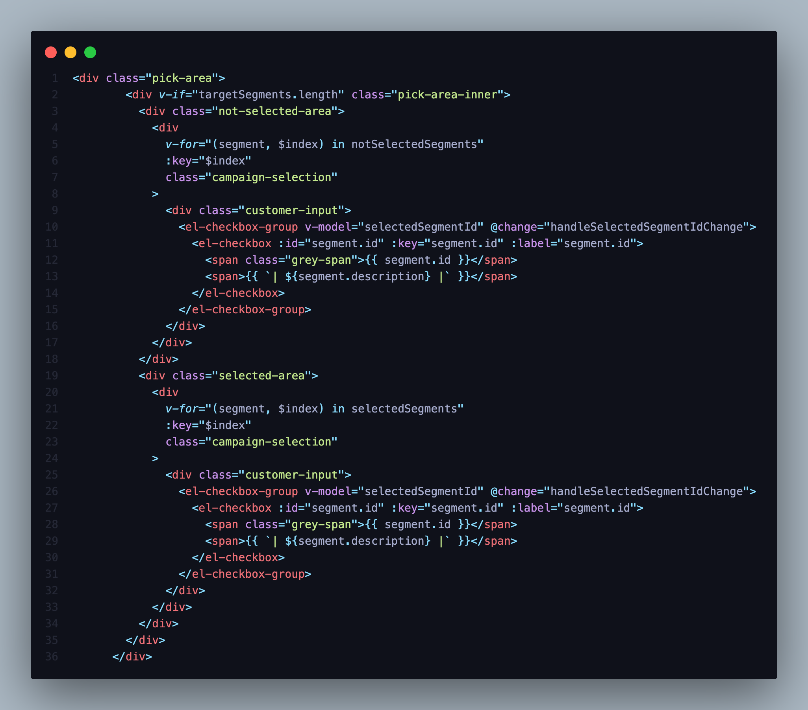
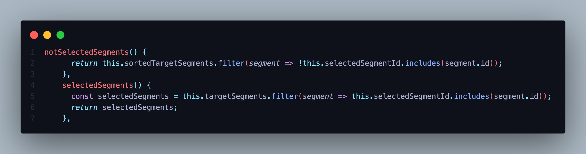

💡 Platform: ODM
💡 Phase: *
目前由於 Segment 的資訊過多，造成 CIS 在做設定時候不方便尋找到當下要設定的項目。
討論後整理出下面優化要點：
1. 項目由新到舊排序
2. 搜尋功能
3. 時間篩選 / 常駐更新篩選 / 已結束篩選：全部項目都一次全部列出，不好尋找需要的項目
4. 秀出被選擇的項目[未選擇 | 已選擇]：因勾選的項目可能會是在之前的項目，所以再次進入時候會不好找尋。
5. 優化確定按鈕邏輯：目前邏輯是當你勾選某一項在取消，確定按鈕會被 Disable 住無法送出。
有兩點想要調整的～ 1. 走期改更新中 -只要有是自己包的持續更新中，就在這分類 2. 搜尋是 全部搜尋，不依照分類 謝謝～ (by Doris Duan)
因應使用者需求，新增調整如下：
1. 時間篩選上移至搜尋功能同階層
2. 不分類 / 更新中 / 常駐更新篩選 / 已結束篩選
幫助 CIS 能夠快速做 Segment 的相關調整設定，減少不必要的工時。
新增投放條件設定 > 請選擇廣告類型(OneAD Speed) > 投放類型(Retargeting) > Retargeting 資料源(自訂資料源) > 選擇：資料源 > 彈出設定視窗
優化調整：
項目由新到舊排序：
所有的項目顯示會是新建立的在最上面。
篩選區塊：
輸入 [搜尋] Input 欄位要搜尋的部分內容，即可快速搜尋到該項目
點擊 [走期] 選擇某日期，即會把某日期結束前的項目篩選出
點擊 [常駐更新]，即會把”segment target”中 設定為常駐更新 的項目篩選出
點擊 [已結束]，即會把已到期的項目篩選出
尚未被勾選區塊/ 已被勾選區塊：
項目被勾選後會移動到另一邊已被勾選區塊，點擊已被勾選區塊中的項目則反之
無

 (1).png)
 (2).png)
 (3).png)


api: {
method: "get"
params: {advertiser_id: "1159"
advertiser_id: "1159"
system: "erp"
url: "/api/v1/odm/others/targets/target_segments"
}
data: [
{
id: 1,
segment_id: "2674e8ab-73d8-11ea-9ef3-42010a006ae7",
data_source: "其他客製化條件",
description: "積極性消費:流行傳染病議題 (近30天濃度前25%) [∩交集] 購物網站 ∪ 便利商店 ∪ 拍賣 ∪ 大型商店與百貨公司 ∪ 生活用品/食品產業鑽石受眾 (新制) ∪ 超級市場/大賣場 (此為現行沒有的特定議題，需評估是否足夠量體/來得及建置) (上述連擊之選項是否也可抓近30天濃度前25%)",
end_date: "2020-06-30",
expired: true,
oneid_qty: 737146,
permanent_updating: false,
segment_category: null,
start_date: "2020-04-01",
}
],
success: true
修改檔案路徑: “../vue/src/components/TargetSegmentPicker.vue”
篩選功能
HTML

Logic

項目勾選區塊
HTML

Logic
